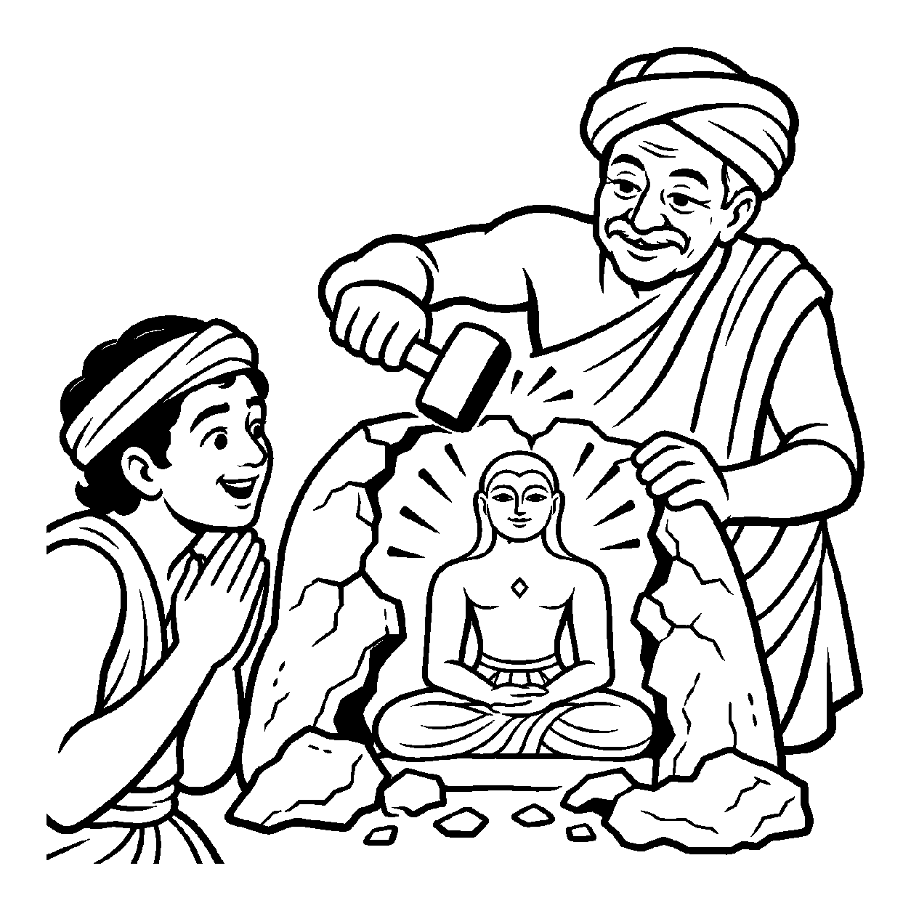

એક અંધારા ઓરડામાં સ્ફટિક કાચની નાજુક બત્તી બળી રહી હતી. અચાનક કાચનું બહારનું કવર તૂટી ગયું, પણ અંદરની તેજસ્વી જ્યોત તે જ સ્થાન પર, તે જ દીપકના ઘાટમાં હવામાં સ્થિર ઊભી રહીને ઝગમગી રહી છે. કાચનું આવરણ તૂટ્યા છતાં પ્રકાશનો પોતાનો એક અરૂપી, નિર્દોષ અને સૂક્ષ્મ ઘાટ અખંડ રહ્યો છે. તેવી જ રીતે સંસારના અંતિમ ભવમાં બિરાજમાન મહાપુરુષ જ્યારે નિર્વાણ પામે છે, ત્યારે તેમનો હાડ-માંસનો ચરમ મનુષ્યદેહ તો અહીં પૃથ્વી પર છૂટી જાય છે; પરંતુ આત્માના અસંખ્ય પ્રદેશો તે ચરમદેહથી સહેજ ન્યૂન (વાત-પિત્ત-કફના પોલાણ જેટલા ઓછા) અરૂપી, નિર્દોષ અને જ્યોતિર્મય સ્વભાવ આકારમાં મોક્ષશિલા પર સદાને માટે પ્રતિષ્ઠિત થાય છે. વર્તમાન કાળની આ પરમ પવિત્ર મુક્ત દશા (સ્વભાવ દ્રવ્યવ્યંજન પર્યાય) ને એક જ સમયમાં પ્રત્યક્ષ જાણીને — "આ સિદ્ધ પરમાત્માની પરમ નિર્મળ, અવિનાશી સૂક્ષ્મ પર્યાય છે" — એમ નિહાળતો જે નય છે, તેને 'શુદ્ધસૂક્ષ્મ ઋજુસૂત્રનય' કહેવાય છે.
ઋજુસૂત્ર નયની આ સર્વોચ્ચ શુદ્ધ કક્ષા છે. તે સંસારી અવસ્થાના કોઈ વિકાર કે શરીરને જોતો નથી; તે કેવળ મોક્ષક્ષણે પ્રગટતી અને અનંતકાળ સુધી નિત્ય રહેતી સિદ્ધપર્યાયના વર્તમાન સમયવર્તી સ્વરૂપને જ લક્ષ્યમાં લે છે. આ પર્યાય 'સૂક્ષ્મ' એટલા માટે છે કારણ કે તે કોઈ ભૌતિક આંખથી દેખાતી નથી, પણ કેવળ અતીન્દ્રિય જ્ઞાનનો વિષય છે; અને 'શુદ્ધ' એટલા માટે છે કારણ કે તેમાં આઠેય કર્મોનો લેશમાત્ર મેલ નથી.
આ નય સાધકને સમજાવે છે કે શરીરના તમામ પાંજરા તૂટી જતાં જ ચેતના પોતાના મૂળ પરમ આકારમાં મુક્ત બનીને અનંત શાંતિમાં વિશ્રામ પામે છે.
ચરમ દેહથી ન્યૂન ઘાટ, સિદ્ધ તણો આકાર;
ઋજુસૂત્ર વર્તમાન લહે, શુદ્ધ સૂક્ષ્મ વિસ્તાર.
કર્મ કવચ સહુ ખરી પડ્યાં, પ્રગટ્યો જ્યોતિ સ્વરૂપ;
સિદ્ધિ ગગને ઝળહળે, આતમ શાંત અનૂપ.
સિદ્ધ પરમાત્માના નિર્મળ અને અતીન્દ્રિય સુખનું ધ્યાન ધરી, પોતાના શુદ્ધ ચૈતન્યધામમાં સ્થિર થવું.

ધર્મપુરી નગરમાં હેમંત નામનો એક કુશળ સુવર્ણકાર એક મોટો પ્રયોગ કરતો હતો. તેણે મીણમાંથી એક અતિ સુંદર ભગવાનની મૂર્તિ બનાવી, તેના પર માટીનું જાડું પડ ચડાવ્યું અને ભઠ્ઠીમાં તપાવ્યું જેથી મીણ ઓગળીને બહાર નીકળી ગયું અને અંદર માટીનો પોલો મોલ્ડ તૈયાર થયો. પછી તેણે તેમાં ઓગળેલું શુદ્ધ સોનું રેડ્યું. જ્યારે સોનું ઠંડું પડ્યું ત્યારે હેમંત હથોડી લઈને માટીના મોલ્ડને તોડવા ગયો. તેના હાથ ધ્રૂજવા લાગ્યા: "જો હું આ માટીના મોલ્ડને તોડીશ, તો શું અંદરની મૂર્તિ પણ તૂટી નહીં જાય?" તે માટીના બાહ્ય કવચને તોડતાં અતિશય ડરવા લાગ્યો.
તે સમયે ત્યાં એક વયોવૃદ્ધ પ્રવીણ શિલ્પગુરુ આવ્યા. તેમણે હેમંતના હાથમાંથી હથોડી લીધી અને એક જ હળવા ફટકાથી બહારની માટીનું પડ તોડી નાખ્યું. માટી ખરી પડી અને અંદરથી સોનાની અદ્ભુત, ઝગમગતી અને તેજોમય મૂર્તિ બહાર પ્રગટી ઊઠી! ગુરુએ કહ્યું: "હેમંત! શુદ્ધસૂક્ષ્મ ઋજુસૂત્રનયને ઓળખ! આ માટીનું પડ એ સંસારી મનુષ્યદેહ જેવું હતું અને અંદરની સોનાની મૂર્તિ એ સિદ્ધ આત્મા જેવી છે! જ્યારે આત્મા મોક્ષ પામે છે ત્યારે બહારનું હાડ-માંસનું માટી જેવું શરીર છૂટી જાય છે, પણ અંદર રહેલો આત્મા લેશમાત્ર ખંડિત થતો નથી; તે તો ચરમદેહથી કિંચિન્ન્યૂન એવા શુદ્ધ, અરૂપી અને દિવ્ય આકારમાં પ્રગટ થઈને સિદ્ધશિલા પર સદાને માટે ઝળહળે છે!" હેમંતનો ભય ઓગળી ગયો. મુક્ત આત્માના શુદ્ધ સ્વરૂપની ઝાંખી થતાં જ તેનું ચિત્ત પરમ આહ્લાદ અને વિશ્રામમાં શાંત થઈ ગયું.
જો જીવ સિદ્ધાવસ્થાને સર્વથા શૂન્ય કે આકારવિહીન નાશરૂપ માની લે, તો તે મોક્ષના અસ્તિત્વને જ ગુમાવી બેસે છે. આવી એકાંત જડતાથી જીવ વર્તમાન વ્યવહારિક સાધના અને કર્તવ્યોની ઉપેક્ષા કરી બેસે છે અને ક્રમિક પરિણામોને સુધાર્યા વિના અકાળે પૂર્ણતાના મિથ્યા સંતોષમાં રાચે છે.
આ નય અરૂપી છતાં ચૈતન્યમય સુનિશ્ચિત આકારનું દર્શન કરાવી સાધકને પરમ ધ્યેયમાં સ્થિર કરે છે, જેથી જીવ હું-પણાને ખોઈને પોતાના આત્મસ્વરૂપમાં સ્થિર થાય છે.